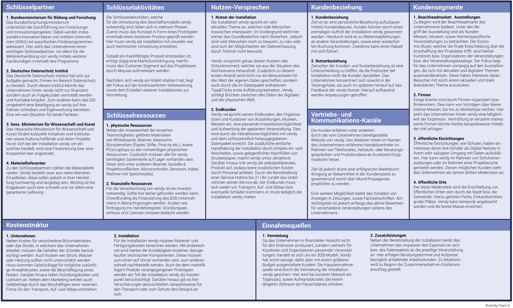
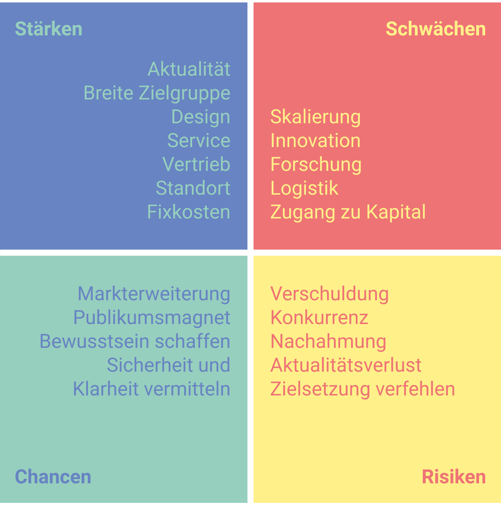

Management
Zu Beginn eines Projekts ist es wichtig dieses genaustens zu kalkulieren und zu planen. Dazu muss überlegt werden, welcher Markt als erstes bedient wird, wie der Vertrieb aussieht und welche Vorteile das Unternehmen im Vergleich zur Konkurrenz bietet.
Benefits des Teams
Das Team hinter der Installation vendy zeichnet sich vor allem durch seine Vielschichtigkeit aus. Es besteht aus Mitgliedern, die sowohl in einem nicht digitalisierten, als auch in einem digitalisierten Umfeld aufgewachsen sind. Dies schafft Verständnis für positive/negative Eigenschaften beider Felder. Das Team nimmt hierdurch die digitalisierte Welt nicht als selbstverständlich und gegeben hin.
Darüber hinaus liegt allen Teammitgliedern der Studiengang „Interactive Media Design“ zugrunde. Dieser stützt sich auf die drei Disziplinen Design, Management und Creative Coding, sodass das gesamte Team ein breitgefächertes Fähigkeitsspektrum aufweisen kann. Zusätzlich vermittelt das Studium spezifische Fachkenntnisse über die verschiedensten digitalen Medien, sowie die Thematik Datenschutz.
Warum ist „vendy“ besser?
vendy liegt vor allem eine Leidenschaftfür die Thematik Datenschutz seitens des Teams zugrunde. Durch die Medien erlangt dieses immer mehr an Bekanntheit. Alle Menschen in einer modernen Gesellschaft sind involviert und somit ist auch das Projektteam betroffen. Durch die Datensammlung großer Internetfirmen fühlen sich Nutzer als einzelne Konsumenten machtlos. Darüber hinaus bedeutet dies einen großen Eingriff in die Privatsphäre.
Das Projektteam möchte dennoch eine neue Erfahrung schaffen und den Datendiebstahl nicht nur auf erschreckende, sondern auf spielerische und lehrreiche Art darstellen. Ein eventuell unwohles Gefühl lässt sich auch hier trotzdem nicht vermeiden und ist gewollt. Dennoch soll den Besucher die Möglichkeit vermittelt werden, selbst etwas gegen den Datenmissbrauch tun zu können um nicht in eine passive und gleichgültige Haltung zu verfallen. Nach dem Besuch soll sich der Nutzer
von vendy erleichtert und bestärkt fühlen. Zusätzlich soll er die Wertigkeit seiner Daten durch etwas Greifbares erfahren und das Gefühl erhalten, er bekäme Unterstützung bei seinem zukünftigen Umgang mit Daten. Dieses Vorgehen differenziert vendy von anderen Kunstprojekten zum Thema Datenschutz.
vendy zeichnet sich durch die einzigartige Verknüpfung aus digitalen und analogen Aspekten aus: es vermittelt dem Nutzer erst ein Gefühl der Bestürzung, jedoch mit dem Bestreben dieses aufzuklären.
Business Model Canvas

Marktanalyse
Value Proposition
„vendy sensibilisiert den Kunden im Umgang mit seinen persönlichen Daten und verdeutlicht ihm den Wert, den diese für Datenhändler haben könnte“
SWOT-Analyse

Die SWOT-Analyse ist eine Methode, mit welcher systematisch eine Situationsanalyse durchgeführt wird. Dabei werden wichtige Eigenschaften und Kernkompetenzen aufgelistet und nach Stärken, Schwächen, Chancen und Risiken sortiert und bewertet. Durch die SWOT-Analyse kann ein Unternehmen Bedrohungen minimieren und den größtmöglichen Nutzen aus seinen Fähigkeiten ziehen. Das Team nutzt die SWOT- Analyse, um eine schnelle und unkomplizierte Übersicht über die Gesamtsituation zu erlangen, und in Zukunft eine weiterführende Strategie planen zu können.
Stärken
vendy beschäftigt sich mit einem medienpräsenten Thema, das einen Großteil der Bevölkerung betrifft. Dabei versucht es das Grundbedürfnis nach Sicherheit und Selbstbestimmung zu befriedigen. Die Installation nähert sich einem schwierigen Thema auf spielerische Weise und schafft dabei den Spagat zwischen ernsthafter Unterhaltung und kostengünstiger Aufklärung. Der Standort Frankfurt, mit seinen zahlreichen Museen und Ausstellungshäusern und etwa 2,3 Mio. Besuchern pro Jahr, ist der richtige Markt für einen fokussierten Einstieg. vendy kann monatsweise zu einem festgesetzten Tagessatz gemietet werden.
Schwächen
vendy wird zu Beginn nur in limitierter Auflage zur Verfügung stehen und kann dadurch nur an eine begrenzte Anzahl von Museen und Ausstellungen ausgeliehen werden. Das Exponat erfordert jedoch eine große Ausstellungsfläche, etwa 20qm, und kommt somit auch nicht für jedwede Räumlichkeiten in Frage.
Die Weiterentwicklungsmöglichkeiten des Ausstellungsstücks vendy sind limitiert, da es sehr stark an ein Themengebiet gebunden ist. Sollte das Thema Datenschutz an medialer Präsenz verlieren, könnte vendy ein kurzlebiges Produkt werden.
Diese Tatsache kann auch bei der Suche nach potenziellen Investoren ein Nachteil sein.
Chancen
vendy könnte das Bewusstsein der Menschen für den Wert ihrer eigenen Daten verbessern und so die gesellschaftliche Aufmerksamkeit für ein wichtiges Thema weiter erhöhen. vendy kann hier potenziell Großes bewegen und gesellschaftliche Aufklärungsarbeit leisten. Durch die allgemeine Aufmerksamkeit ist vendy ein potenzieller Publikumsmagnet. Sollte es Erfolg haben, besteht die Möglichkeit, schnell auf weitere Märkte (Soziale- und bildende Einrichtungen, sowie Firmen) auszuweiten und die Nachfrage zu steigern.
Risiken
vendy kann nur Vorort entstehende Daten verarbeiten und verfehlt dadurch eventuell die erhoffte Wirkung.
Das Publikum nimmt die Installation negativ auf, wodurch ein weitreichendes Bewusstsein bei selbigem nicht erzielt werden kann.
Des Weiteren besteht die Möglichkeit, dass das Thema Datenschutz sehr schnell wieder an Brisanz verliert und das Team mehr Ausstellungsstücke besitzt, als Nachfrage vorhanden ist.
Marktsegmentierung
Da vendy nur eine Kundengruppe bedient, spricht man hier von einem Single-Sided Market. Es handelt sich um einen B2B-Markt. Potentielle Märkte sieht das Team von vendy in Museen, Ausstellungen und Messen, sowie bei Schulen, Universitäten, Firmen, auf Festivals und öffentlichen Orten wie zum Beispiel Einkaufcentern und Fußgängerzonen.
Nachdem das Team die Marktchance eingeschränkt hat, beschließt es, sich in den ersten Schritten auf Museen, Messen und Ausstellungen zu fokussieren, da man zu diesen Märkten mit einer Kunstinstallation leichter einen direkten Zugang bekommen kann. Zudem können an diesen Ausstellungsorten viele unterschiedliche Menschen aus den weiteren zuvor erwähnten potentiellen Märkten auf die Installation aufmerksam gemacht werden, sodass schließlich in andere Märkte expandiert wird.
Die Endnutzer in den gewählten Marktsegmenten haben eine große Alterspanne, welche von jung bis alt geht. Die Installation soll den Besuchern zur Unterhaltung und gleichzeitig als Aufklärung im Thema Datensicherheit dienen und sie im Umgang mit ihren persönlichen Daten sensibilisieren. Da dies ein aktuelles Thema ist, welches die persönliche Sicherheit aller betrifft, besteht ein großes Interesse daran, dieses Grundbedürfnis des Menschen der Sicherheit zu befriedigen.
Um das gewünschte Resultat zu erzielen, muss die Installation zuerst interessant auf den User wirken und später einen schockierenden Effekt haben. Neben dem Aufzeigen des Problems soll auch eine Belehrung erfolgen, wie man das Problem angehen kann. Es wird ein Mehrwert für die Besucher generiert, indem sie neben der Erinnerung auch noch etwas Haptisches mitnehmen können, welches das Erlebnis ins Gedächtnis ruft.
Beachhead Market
Zu Beginn bedient das Team den Markt der Ausstellungen bzw. Messen, die sich mit aktuellen und digitalen Themen auseinandersetzen. Diese haben Interesse daran, Besucher mit solch einem aktuellen und stark diskutierten Thema anzulocken.
Die Zielkunden werden durch private Sponsoren und staatliche Subventionen finanziert und sind dadurch, dass zum Bespiel Ausstellungen oft Teil öffentlicher Institutionen wie Museen sind, leicht von dem vendy- Verkaufspersonal zu erreichen.
Total Addressable Market
Als Brückenkopfmarkt wurden Museen und Ausstellungshäuser gewählt. Das Projektteam strebt dabei ein B2B-Geschäftsmodel zwischen sich und den entsprechenden Kuratoren an. Diese werden im Folgenden als Kunde bezeichnet und in der Bottom-Up Analysis näher erläutert.
Das Exponat vendy soll an diese Häuser wochen- bzw. monatsweise zu einem festgeschriebenen Tagessatz vermietet werden. Somit sind Museen und Ausstellungshäuser als Primärkunde und Geldgeber zu verstehen.
Als Endkunde (bzw. Endnutzer) werden die Besucher der Ausstellungen verstanden, die das Ausstellungsstück nur indirekt durch ihre Eintrittsgelder bezahlen. Für den Erfolg weiterer Geschäftsbeziehungen zwischen dem Projektteam und potenziellen Primärkunden haben die Endkunden jedoch eine entscheidende Wichtigkeit, da positives Feedback vendys Image steigert. Die Endkunden werden in einer Top-Down Analysis näher durchleuchtet.
Bottom-Up Analysis der Primärkunden
In Deutschland gibt es 6.372 Museen und 470 Ausstellungshäuser (Stand: 2016), in Hessen 419 Museen und 593 Ausstellungen im Jahre 2016, davon etwa 60 Museen und Ausstellungshäuser in Frankfurt (2016).(1)
Der Markt wird in die folgenden Bereiche segmentiert, um anfangs einen realistisch bedienbaren Markt zu haben: Bundesrepublik, Bundesland, Stadt und Kreis. Im Fall von Team 6 ist das Frankfurt und die umliegende Region. Also hätte man etwa 60 potenzielle Kunden, wenn von einer hundertprozentigen Marktdurchdringung ausgegangen wird. Diese ist rein hypothetisch anzunehmen, da nicht jedes Museum oder Ausstellungshaus Interesse an multimedialen Exponaten hat. Außerdem wird auch mit einer gewissen Konkurrenz zu rechnen sein, die ihrerseits einen Teil des potenziellen Markts bedient.
Team 6 veranschlagt zunächst eine Vermietungsgebühr in Höhe von 1.000€ (je Ausstellungsstück) pro Tag, bei einer Mindestdauer von einer Woche. Sobald die Nachfrage steigt, wird die Mindestmietdauer auf einen Monat angehoben, um Aufwand und Installationskosten zu minimieren. Des Weiteren wird versucht den Tagessatz schrittweise anzuheben, um möglichst schnell ein weiteres Ausstellungsstück zu bauen und das Team erweitern zu können.
Es wird von einer 50 prozentigen Auslastung im ersten Geschäftsquartal ausgegangen, die aber bereits im zweiten auf 100% angehoben werden kann. Die Mieteinnahmen für ein Ausstellungsstück sollen dabei zügig gesteigert werden. Das Projektteam strebt bis zum Abschluss des ersten Geschäftsjahres eine tägliche Vermietungsgebühr in Höhe von 3000€ an.
Da eine Erhöhung der Vermietungsgebühr erst bei erhöhter Nachfrage gewissenhaft zu veranschlagen ist, wird in der TAM-Berechnung daher eine durchschnittliche Preiserhöhung von 182€ pro Monat veranschlagt.
Die Berechnung des Bottom-Up-Wertes ergibt sich aus der Anzahl der Kunden multipliziert mit dem Umsatz pro Kunde. Da es zu Beginn nur eine vendy gibt, kann es je Vermietungszeitraum auch nur einen Kunden geben.
Somit ergibt sich folgende Berechnung für vendy 1 im ersten Geschäftsjahr:
1. Quartal: 15 Tage * 1000€ + 15 Tage * 1182€ + 15 Tage * 1364€ = 159570€
2. Quartal: 30 Tage * 1546€ + 30 Tage * 1728€ + 30 Tage * 1910€ = 466560€
3. Quartal: 30 Tage * 2092€ + 30 Tage * 2274€ + 30 Tage * 2456€ = 613980€
4. Quartal: 30 Tage * 2638€ + 30 Tage * 2820€ + 30 Tage * 3002€ = 761400€
Der Bottom-Up-Wert für vendy 1 beträgt im ersten Geschäftsjahr: 2.001.510 €
Um die steigende Nachfrage zu bewältigen, werden weitere vendys hergestellt: Das zweite Ausstellungsstück (vendy 2) wird mit 75%iger Auslastung zum zweiten Geschäftsquartal starten und ab dem dritten Quartal ebenfalls zu 100% gebucht sein.
Ist gegen Ende des zweiten Quartals abzusehen, dass diese angestrebte Ausbuchung nahezu erreicht wird, wird zum dritten Geschäftsquartal ein drittes Ausstellungsstück (vendy 3) hergestellt. Diesem wird dieselbe Steigerung zugrunde gelegt wie vendy 2: 75% Ausbuchung in den ersten drei Monaten, 100% ab dem zweiten Quartal nach Bereitstellung.
Somit ergibt sich folgende Berechnung für vendy 2 im ersten Geschäftsjahr:
2. Quartal: 24 Tage * 1546€ + 24 Tage * 1728€ + 24 Tage * 1910€ = 373248€
3. Quartal: 30 Tage * 2092€ + 30 Tage * 2274€ + 30 Tage * 2456€ = 613980€
4. Quartal: 30 Tage * 2638€ + 30 Tage * 2820€ + 30 Tage * 3002€ = 761400€
Bottom-Up-Wert für vendy 2 im ersten Geschäftsjahr: 1.748.628 €
Berechnung für vendy 3 im ersten Geschäftsjahr:
3. Quartal: 24 Tage * 2092€ + 24 Tage * 2274€ + 24 Tage * 2456€ = 491184€
4. Quartal: 30 Tage * 2638€ + 30 Tage * 2820€ + 30 Tage * 3002€ = 761400€
Bottom-Up-Wert für vendy 3 im ersten Geschäftsjahr: 1.252.584 €
Wenn die Vermietungsrate der drei vorhandenen vendys über 90% liegt, kann ein viertes Gerät bereits zum vierten Geschäftsquartal nachproduziert werden.
Daraus ergibt sich folgende TAM-Größe für den angestrebten Brückenkopfmarkt: 5002722,00 €.
Top-Down Analysis der Endkunden
In einer Top-Down Analysis betrachtet das Projektteam die größtmögliche Menge an Endkunden bzw. Endnutzern, die bei 100 prozentiger Marktdurchdringung erreicht werden können.
Es gab 118 Mio. Museums- und Ausstellungsbesucher in Deutschland im Jahr 2016. Davon insgesamt 5,3 Mio. Besucher in hessischen Museen und Ausstellungen (ein Anteil von 4,5%).
43,4% der Besucher in Hessen finden sich allerdings in den Institutionen in Frankfurt wieder, womit der TAM der Endnutzer im gewählten Brückenkopfmarkt bei 2,3 Mio. liegt. (1)
Darüber hinaus muss beachtet werden, dass diese potenziellen Endkunden – wie Eingangs bereits erwähnt – zwar maßgeblich über den Erfolg bei der weiteren Vermietung bzw. Herstellung der Ausstellungsgeräte entscheiden, jedoch nicht als direkte Geldgeber fungieren und somit nicht in die Berechnung des TAMs einfließen.
Quelle: [47]
Life Cycle Use Case

Marketing
Geschäftsstrategie
Die Unternehmensstrategie des Startups vendy ist die der Differenzierung. Das Produkt selbst punktet durch Qualität und Leistung in Herstellung und Technik und auch der Service zeichnet sich durch Kompetenz und Zuverlässigkeit aus. Zudem ist vendy als digitale Kunstinstallation in einer Branche, die häufig der Digitalisierung hinterher ist, eine Besonderheit. Sie hilft dem Nutzer eines seiner wichtigsten Grundbedürfnisse, und zwar dem der Sicherheit, zu befriedigen.
Marketinginstrumente
Produktpolitik:
Der Kernnutzen von vendy ist, dass es den Nutzer im ersten Schritt schockiert, da es so viel über ihn weiß, jedoch im zweiten Schritt auch Aufklärung betreibt und ihm eine Website zur Verfügung stellt, die ihn darüber informiert, wie er es in Zukunft besser machen kann.
Der Name vendy ist kurz und leicht einprägsam. Die Installation selbst besteht aus zurückhaltenden, schwarzen Wänden und einem schwarzen Boden, welcher mit schwarzem EVA Schaumstoff verkleidet ist, um die beste Qualität der Projektion zu garantieren. Zudem wirkt sie so auf den Nutzer geheimnisvoll und interessant, weil sie nicht verrät, um was es gehen wird.
Das Team von vendy punktet außerdem mit einem guten und verlässlichen Service. Es besitzt sowohl Fachpersonal für die Installation vor Ort, als auch abrufbereite Installateure und einen Supportservice von 7 bis 21 Uhr.
Ein weiterer Vorteil ist, dass sowohl das Konzept von vendy, als auch das Design der Installation auf den jeweiligen Anwendungsfall angepasst werden kann. So kann das CI, sowie der Aufbau der jeweiligen Ausstellung in das Konzept adaptiert werden.
Preispolitik:
Die Selbstkosten von vendy sind dadurch, dass es sich um ein Verleihgeschäft handelt, pro Produkt nicht all zu hoch. Es erfolgt eine einmalige Anschaffung und kann fortan verliehen werden. Dazu kommt schließlich mit steigender Stückzahl auch eine steigende Anzahl an Angestellten für das Anpassen des Konzeptes, die Installation vor Ort und den Supportservice.
Allgemein wird der Preis je nach Größe der Ausstellung, Anliegen des Kunden und Buchungsdauer variieren. So wird die Installation in kurzen Zeiträumen bis zu einer Woche einen erheblich höheren Tagespreis haben, als bei einer Laufzeit von drei Monaten, da alleine die Konzeption und Installation einen großen Aufwand bedeuten.
Distributionspolitik:
Die Installation vendy wird durch eigene Mitarbeiter (betriebseigene Distributionsorgane) direkt an den Kunden (persönlicher Direktverkauf) vertrieben (Nullstufenkanal). Die Auftragsabwicklung, welche den Eingang, die Bearbeitung und die Zusammenstellung des Auftrags umfasst, findet in der vendy Zentrale statt. Daraufhin wird der Auftrag in das Lager weitergegeben, in welchem die Ware verpackt wird. Als Transportmittel fungieren gemietete LKWs, die die Ware an den jeweiligen Standort liefern, welche schließlich von den vendy- Installateuren in der Ausstellung angebracht wird. Daraufhin folgt eine Schulung für das zuständige Personal.
Kommunikationspolitik:
Da es sich bei dem Vertrieb von vendy um B2B-Marketing handelt, akquiriert das Team direkt bei dem Einkaufsgremium des jeweiligen Kunden. Außerdem wird vendy auf Messen und Ausstellungshäuser installiert, um auch dort potentielle Partner und Kunden zu erreichen. Das Produkt selbst kann man nicht im Internet oder im regulären Einzelhandel kaufen, sondern es wird auf Bestellung direkt an die Kundenwünsche und die Ausstellung angepasst. Es gibt eine eigene Homepage, auf denen sich potentielle Kunden über die Installation informieren und das Team kontaktieren können.
Zielgruppenanalyse
Die Zielgruppe besteht besonders aus Ausstellungen in Museen oder bei Messen. Im Jahr 2016 gab es in Deutschland ca. sechstausend Museen [48] und es werden pro Jahr um die 180 Messen [49] veranstaltet. Beides wird häufig durch private Sponsoren und staatliche Subventionen mitfinanziert werden. Allein im Jahr 2017 beliefen sich die Ausgaben des Beauftragten der Bundesregierung für Kultur und Medien zur Subvention von Museen auf rund 130 Millionen Euro. [50] Somit steht Kapital zur Verfügung um dies in Innovationen und einen Fortschritt in Richtung Digitalisierung zu investieren. Dies ist besonders im Bereich der Museen nötig. Hier kann vendy durch das aktuelle und diskutierte Thema zur Steigerung der Besucherzahlen besonders im Bereich der jüngeren Generation führen.
Ziele
Umsatzwachstum/ Marktanteil/Rendite
Der Umsatz von vendy wird in den ersten drei Jahren aus einem steigenden Mietpreis gezogen. Wird die erste multimediale vendy für 1000,-€ am Tag zur Verfügung stehen, werden mit steigender Nachfrage weitere Installationen produziert, sodass der Mietpreis auf 3000,-€ pro Exponat steigt. Dies führt zwar im ersten und zweiten Quartal hohe Verluste mit sich, sichert jedoch auf längere Sicht einen Anstieg der Umsätze. Kunden werden zu Beginn somit mit einem niedrigeren Preis geworben, wobei steigende Preise durch steigende Qualität und Kundenservice gerechtfertigt werden.
Zum jetzigen Zeitpunkt ist der Markt der interaktiven und digitalen Kunstinstallationen, auf dem sich das System behaupten muss, bereits vorhanden. Der er jedoch noch nicht vollständig eingenommen ist, ist es nötig, die Kunden zu begeistern und auch auf lange Sicht die Kundenbeziehung zu pflegen. Jedoch werden in den nächsten Jahren neue Technologien immer mehr auch in Museen und Messen eingeführt, sodass sich dort der digitale Markt weiterentwickelt. Dann wird es ein Ziel sein, den Marktanteil zu halten und Innovationsführer zu sein.
Kundengewinnung
Durch Akquisition bei den einzelnen Messen und Museen werden Neukunden dazu gewonnen und von dem Exponat überzeugt. Außerdem stellt das Team auf Messen aus, um weitere potentielle Kunden zu erreichen.
Nachdem die Messen- und Museenbranche mit vendy abgedeckt ist, wird durch die Durchführung von einer Marktanalyse erschlossen, welche weitere Branche das größte Potential für das Produkt bietet.
Hat die Gesellschaft durch vendy die nötige Aufklärung erhalten, wird durch weitere Forschung und Entwicklung ein neues Problemfeld ermittelt und eine Anwendung für dieses entwickelt.
Kundenzufriedenheit
Das Projektteam hinter der Installation vendy muss eine Unterscheidung zwischen dem Customer in Form der Messe/ Ausstellungsveranstalter, sowie dem User als Besucher treffen.
vendy klärt den Besucher(User) über Datenschutz und den Umgang mit seinen persönlichen Daten auf. Dabei konfrontiert es ihn zuerst mit Daten, die es während seines Aufenthalts in der Ausstellung über ihn ermitteln konnte. Daraufhin bekommt er die Möglichkeit diese in ausgedruckter Form mit nach Hause zu nehmen. Der Wert dieser Daten wird symbolisch als Verzehr-Bon für das Museums-/ Messecafe aufgezeigt. Zudem erhält er auf der Rückseite des Datenzettels einen QR Code, welcher zu einer Aufklärungswebsite zum Thema Datensicherheit, Accounteinstellungen und Verhalten im Internet führt. Dies soll dem Nutzer die Möglichkeit geben, das unwohle Gefühl, dass durch die Nutzung der Installation aufgekommen ist, wieder zu bereinigen. Er bekommt somit ein Erfolgserlebnis, was zur Kundenzufriedenheit führt.
Die Kunden, die das System leihen, werden hingegen durch Zuverlässigkeit, guten Support und enger Zusammenarbeit zufriedengestellt. vendy ist eine stabile und in sich geschlossene Installation, die absichtlich so konzipiert und produziert wurde, dass sie einfach zu handhaben, wenig störanfällig und einzelne Teile leicht austauschbar sind. So sind keine Fachleute nötig, um einfach Reparaturen oder Wartungen durchzuführen und generell ist auf Qualität geachtet, welche diese allgemein sehr geringhalten. Sollte doch etwas nicht mehr funktionieren, besitzt das vendy-Team einen kompetenten Supportservice, der an mehreren zentralen Standorten angesiedelt ist, um bei nicht durch telefonische Hilfe lösbaren Problemen schnell vor Ort zu sein und diese zu beheben. Somit wird zum einen gesichert, dass die Nutzer keine negative Erfahrung mit vendy machen, weil sie nicht funktioniert und verhindert, dass der Kunde frustrierte Besucher hat. Zum anderen hat auch der Kunde selbst keine negative Erfahrungen mit der Installation, da sie nicht zu komplex ist und nicht immer Fachleute bestellt werden müssen, die erst nach einigen Tagen nach dem Problem sehen. Außerdem soll das Projektteam nahe mit dem Kunden zusammenarbeiten und beim Umbau der Ausstellung zum Beispiel immer zur Stelle sein. Dies dient der gemeinsamen Planung, sodass die gewünschte Kundenzufriedenheit umgesetzt werden kann.
Produktion
Zu Beginn wird vendy im Büro des Projektteams, sowie in den Fachräumen der Hochschule Darmstadt produziert. Sobald die Nachfrage steigt, stellt das Team Personal ein und zieht in ein größeres Büro nach Frankfurt um.
Die Produktion von vendy teilt sich in verschiedene Phasen ein. Während zu Beginn der Fokus auf eine funktionierende Installation gelegt wird, werden im Verlauf des ersten Geschäftsjahres drei weitere Exponate produziert. Der Fokus liegt dabei jedoch nicht auf einer möglichst schnellen Nachproduktion, sondern auf der iterativen Verbesserung der ursprünglichen Technik und Materialien.
Durch das Projektteam selbst muss das Vorhandensein aller bestellbareren Systemteile, wie Beamer oder Projektionsboden, gewährleistet sein. Zusätzlich erfolgt ein Anpassen des Gerüsts für das Exponat, sowie das Zuschneiden des schwarzen Stoffes für die Wandprojektion und die Technikabdeckung. Hierfür ist ein Zeitraum von zwei Tagen pro vendy eingeplant.
Des Weiteren müssen für jede vendy 25 ESP8266 vorbereitet werden, um innerhalb der abgedeckten Ausstellungsfläche skalierbar und flexibel sein zu können. Auf jeden Mikrokontroller wird mittels eines firmeninternen Rechners die benötigte Software aufgespielt. Dies nimmt im Idealfall nicht mehr als 30 Minuten in Anspruch. Da der ESP8266 eine Stromversorgung benötigt, wird für jeden Microkontroller eine Powerbank mit zugehörigem Verbindungskabel beiseitegelegt.
Jede hergestellte vendy wird durch das Projektteam 6 einmalig für Testzwecke aufgebaut. Im Anschluss daran wird diese Aufgabe des Auf-, sowie des Abbaus auf Ausstellungen an Installateure abgegeben. Alle Komponenten werden zuvor vom Unternehmen fachgerecht für den Transport, sowie die Konstruktion vorbereitet, sodass auch Externe das Installieren übernehmen können. Ein Starten der Recheneinheit führt automatisch zum Starten sämtlicher Softwareprozesse.
Vertrieb und Logistik
Die Ersatzteile und vorrätigen Systeme werden im Keller oder dem Abstellraum des Büros gelagert und durch einen Installateur zum beliebigen Standort geliefert und montiert.
Der Transport findet mit einem gemieteten LKW bzw. einem kleinen Lieferwagen statt.
Forschung und Entwicklung
Die Installation, sowie die zugehörige Technik, lassen sich selbst nur schwer vor Nachahmern schützen.
Jedoch besitzt das Team Fach- und Beratungswissen, Branchenkenntnisse und verkaufsfördernde Kenntnisse über die Lösung, die Nachahmer sich erst aneignen müssten. Deshalb ist das Ziel durch neue Innovationen Vorreiter zu bleiben und immer ein Schritt weiter als die Konkurrenz zu sein.
Um Innovationsführer zu werden, wird das Team in die Forschung von Innovationen investieren. Es ist wichtig immer die neuesten Sensor- und Trackingtechniken zu kennen und zu überlegen, wie man die bisherige Installation mit den aufkommenden neuen Techniken noch verbessern kann. Außerdem wird auch nach neuen Problemfeldern geforscht, zu denen man, ähnlich der Datenschutzproblematik, eine neue Installation entwickeln kann.
Durch mehr Forschung und günstigere Technik können auch die Herstellungskosten gesenkt und so die Wirtschaftlichkeit erhöht werden. Des Weiteren wird das Projektteam auch in Marktanalysen investieren, da der Einstiegsmarkt nicht sehr groß ist und relativ schnell gesättigt sein wird. Diese soll erschließen, welche Branche das größte Potential für das Produkt bietet, um die Installation auf einen weiteren Markt auszuweiten.
Das Projektteam wird in der Seedingphase kein Geld in die Forschung und Entwicklung investieren. Dies wird sich im Laufe der drei Jahre ab der Growthphase auf 1800,-€ erhöhen.
Projektplanung
Ist

Soll

Organisation im Team
Zu jedem Projekt gehört neben guter Planung und Koordination ein motiviertes Team. Vor allem Themen wie Time Management, Communication Management und Scope Management bilden hierbei wichtige Eckpunkte.
Das Team 6 verwendet verschiedene Mittel, um sich gegenseitig über wichtige Aufgaben zu unterrichten, Fortschritte mitzuteilen, aber auch Meinungsverschiedenheiten in Diskussionen erörtern zu können.
Für die Aufgabenverteilung nutzt das Team Asana, ein Projektmanagement-Tool zum Organisieren von Tasks und Terminen innerhalb eines (online) Kanban-Boards. Vorteile sind hierbei die Erinnerung an Deadlines und der aktuelle Überblick aller verteilten Tasks.
Zusätzlich stützt sich die Teamkommunikation auf die Anbieter Skype, Slack sowie Signal. Bei Slack hat der Nutzer die Gelegenheit verschiedene Channels für unterschiedliche Aufgabenbereiche anzulegen. In diesen speichert das Team 6 neben Recherchelinks auch Bild- und Videomaterial. Hierdurch kann im Nachhinein das Datum, sowie die Uhrzeit des Aufrufens für die Quellenangabe überprüft werden.
Skype ermöglicht dem Team sich jederzeit zu einem spontanen Meeting zusammenzusetzen, wenn kurzfristig Probleme auftreten, die es zeitnah zu klären gilt. Dennoch finden auch persönlich regelmäßige Teammeetings statt. Diese sind essentiell, um ein gutes Gruppenklima zu gewährleisten und Unklarheiten beseitigen zu können. Kurze Informationen und Absprachen werden über Signal verschickt.
Zur Speicherung und gemeinsamen Bearbeitung wird der Clouddienst OneDrive von Microsoft verwendet. Dieser ermöglicht die parallele Bearbeitung von Textdokumenten und Präsentationen. Aufgrund der unterschiedlichen Betriebssysteme des Teams erweist sich diese Lösung als sehr hilfreich.
Im weiteren Verlauf soll die Programmierung GIT gestützt erfolgen, wobei mittels GitHub ein kostenloses Repository seitens des Teams angelegt werden kann. Mittels dem Desktop Client Sourcetree erfolgt eine Verwaltung, sowie Versionierung der Software, an welcher gemeinsam gearbeitet wird.
Kanban
Das Wort Kanban kommt ursprünglich aus dem Japanischen. Es setzt sich aus den Worten KAN (Visualisieren) und BAN (Karte) zusammen. Die durch Toyota entwickelte Methode dient dazu, dass jeder seinen Zuständigkeitsbereich innerhalb des Aufgabenpools erkennt.
Im Mittelpunkt steht hierbei das Kanban-Board, welches mit verschiedenen Kärtchen bestückt ist. Auf diesem stehen einzelne To-Do’s, die für das Projekt wichtig sind. Jedes dieser Kärtchen durchläuft eine Reihe verschiedener Prozessschritte, angefangen vom Backlog, über die Verteilung, zum Testing, bis hin zum eigentlichen Release. Durch diese Art des Managements erkennt man schnell wo sich die Arbeit staut, wer aktuell Hilfe benötigt und wer zurzeit nicht mit Aufgaben ausgelastet ist. Das Projektteam verwendet diese Methode, wie zuvor beschrieben, mithilfe des Tools Asana.
Kostenplanung
Um möglichen Investoren oder Banken als Kreditgebern Einblicke in die Finanzen des Unternehmens zu bieten, hat die Projektgruppe 6 im Folgenden eine tiefergehende Kostenkalkulation angelegt. Diese soll vermitteln, welche Verluste am Anfang anfallen und welche Gewinne auf längere Sicht erwartet werden.
Die Kostenkalkulation unterteilt sich hierbei in drei verschiedene Phasen:
Seedingphase
Beschreibung: In der Seed-Phase wird aus der Idee von einem Produkt ein Konzept. Neben einem Businessplan werden verschiedene Prototypen durchlaufen. Die ersten Gründungsvorbereitungen laufen und der Organisationsaufbau ist zu planen. Mit der anschließenden Gründung des Unternehmens kommt auch die erste Frage nach einem möglichen Kapital auf. Dieses stammt vor allem aus privaten Krediten der Gründer, der Familie und Freunde, Business Angels oder auch Venture Capital-Unternehmen.
Löhne sind an realen Löhnen von Arbeitnehmern der beschriebenen Berufe orientiert.
In der Seedingphase beschäftigt das Team um vendy einen Manager, zwei Entwickler und zwei Designer. In dieser Phase recherchiert das Team und arbeitet ein Konzept aus, welches in ersten Prototypen getestet wird. Für die ersten Tests mietet das Team ein kleines Studio in dem die Prototypen aufgebaut werden können. Zu Beginn der Seedingphase werden die Kosten drastisch steigen, weswegen ein Venture Capital von min. 50.000,00 € benötigt wird, um längerfristig nicht in die Verschuldung abzurutschen. Neben den Lohnkosten fallen auch Kosten für juristische Beratung, dem Schutz des Designs und Versicherungen an, sowie mit dem Gründen verbundene Kosten. Am Ende der Seedingphase befindet sich das Unternehmenskonto stark im roten Bereich.
Growth phase
Beschreibung: Nachdem die Gründung erfolgreich abgeschlossen ist, geht es an das Feinkonzept. Gefertigte Prototypen müssen an einem vordefinierten Testmarkt geprüft werden, sodass am Ende dieser Phase ein marktreifes Produkt steht. In dieser Phase wird viel Kapital verbraucht, die Ausgaben des Unternehmens sind sehr hoch, da nicht mit einem Kapitalrückfluss zu rechnen ist. Vor allem Venture Capital-Unternehmen, Business Angels oder Inkubatoren finanzieren das Unternehmen, dies ist jedoch mit einem hohen Risiko verbunden. Die Gründer selbst müssen weiterhin mit einer mittleren Selbstbeteiligung rechnen.
Zu Beginn der Growthphase kann das Projektteam die ersten Prototypen fertigstellen und auf Testmärkten ausstellen. Dabei fährt das Projekt erste Gewinne ein, die aber nicht ausreichen um anfallende Kosten zu decken. Kann das Team weitere 50.000,00 € Venture Capital auftreiben, kann so eine stärkere Verschuldung gebremst werden. Innerhalb dieser Phase baut das Team eine stark optimierte Version von vendy, die durch die Tests und das Feedback ausgearbeitet werden kann und stellt diese zum Ende der Phase fertig. Um diese optimierte Version zu produzieren, fallen wieder erhöhte Materialkosten an.
Expansion phase
Beschreibung: Die Expansionsphase startet mit der Fertigstellung eines marktreifen Produkts. Eine schnelle Marktdurchdringung wird nun angestrebt, der Fokus liegt auf dem Ausbau des Vertriebs. Erste Vermietungen des Produkts bringen zwar Umsatz, allerdings noch keinen Gewinn. Vorherige Ausgaben müssen erst gedeckt werden, zusätzlich wird Geld in den Ausbau investiert. Mit der Zeit stellen sich jedoch Gewinne ein, dadurch sinkt die Selbstbeteiligung der Gründer stark ab.
In dieser Phase geht es dem Team um eine starke Positionierung auf dem Markt. Hierfür wurden mittlerweile zwei Monteure und zwei Mitarbeiter für den Kundenservice angestellt. Diese Arbeitskräfte sorgen für den Auf- und Abbau und für die Beantwortung von Kundenanfragen. Zudem werden weitere vendy ́s nach jedem Quartal gefertigt mit denen das Team erste Gewinne einfahren kann. In dieser Zeit fallen regelmäßig Reparaturen bzw. Materialkosten an, die einen neuen Kostenpunkt darstellen.
Wird das Projekt positiv angenommen und die Auslastung über Monate hinweg stabil, können die Mietpreise erhöht werden. Ab diesem Zeitpunkt gelingt es der Projektgruppe schwarze Zahlen zu schreiben und stetig Schulden abzubauen. Das Projekt wird also nach ca. 24 Monaten stark gewinnbringend. Um über die gesamte Dauer des Projekts liquide zu bleiben, muss das Team ca. 300.000,00 € Startkapital auftreiben.
Quelle: [51]
Projektrisiken
Projektrisiken müssen bei der Planung eines Projekts gründlich bedacht und bewertet werden, um vorbereitet zu sein falls Risiken im Laufe der Projektumsetzung eintreten. Dadurch kann der Schaden um ein Vielfaches minimiert und passende Gegenmaßnahmen zügig ergriffen werden.
Man unterteilt Risikofaktoren in verschiedene Kategorien: Die fachlichen, qualitativen und leistungsbezogenen Risiken, die Projektmanagementrisiken, organisatorische Risiken und externe Risiken.
Den fachlichen Risiken liegt vor allem fehlende Erfahrung seitens der Teammitglieder zu Grunde. vendy wird von fünf jungen Menschen gegründet, die selbst noch nie ein Unternehmen geleitet haben. Deshalb ist es sinnvoll sich vor der Gründung ausgiebig Rat bei erfahrenen Unternehmern zu holen, oder sogar einen Berater einzustellen.
Ein weiterer, wichtiger Punkt ist die Zuverlässigkeit der Angestellten. Da das vendy-Team nicht überall zur gleichen Zeit sein kann, benötigt es angestellte Installateure und Service-Mitarbeiter. Je länger der Aufbau der Installation dauert, desto mehr Zeit und Geld geht verloren, welches an anderer Stelle fehlen könnte. vendy muss vor einer Ausstellung ausgiebig in den Räumlichkeiten getestet werden, um Probleme so früh wie möglich zu beheben. Sonst muss das Produkt ggf. überarbeitet werden oder man läuft Gefahr, dass vendy nicht die gewünschte Wirkung auf die Besucher hat oder nicht verstanden wird. Dann müsste das Konzept noch weiter auf diese angepasst werden und die Ausstellung.
Auch der Absturz eines Servers könnte vendy Probleme bereiten. In diesem Fall bräuchte man einen Fachmann im Unternehmen, der auf Abruf die Fehler wieder beheben kann. Außerdem sollten auch auf Firmeninternen Servern und Datenbanken in regelmäßigen Abständen Backups und Wartungen gefahren werden, um den Verlust sensibler Daten zu vermeiden.
Doch nicht nur ein technischer Ausfall könnte zur Bedrohung werden. Hacking, Datenschutzverletzungen oder Datendiebstähle sind eine permanente Bedrohung, durch die das Unternehmen riesige Verluste erleiden würde. Größtmöglicher Datenschutz muss also unbedingt gegeben sein.
Ein weiteres Risiko liegt in der finanziellen Stärke eines Unternehmens. vendy muss nicht nur kurzfristig liquide sein, um das Gehalt der Angestellten bezahlen zu können, sondern auch dauerhaft ohne externe Geldgeber Liquidität gewährleisten. Ansonsten droht auf lange Sicht die Insolvenz. Um einer Verschuldung vorzubeugen, wird ein durchdachter Finanzplan entwickelt. Außerdem muss noch vor der Produktion weiterer Ausstellungsstücke sichergestellt werden, dass eine entsprechende Nachfrage nach vendy besteht.
Ein externes Risiko ist die Nachahmbarkeit des Produktes. Damit zukünftige Konkurrenten nicht den Markt an sich reißen, sollte vendy sich frühzeitig in verschiedenen Märkten ansiedeln, und einen hohen Wiedererkennungswert besitzen. Zudem sind Verlässlichkeit und ein guter Service Faktoren, um eine starke Kundenbindung aufzubauen.
Weiterhin drohen immer nicht kalkulierbare Umweltrisiken, wie zum Beispiel Naturkatastrophen oder Brände. Aber auch politische und gesellschaftliche Veränderungen spielen eine enorme Rolle: das Thema Datenschutz könnte an Aktualität verlieren, weil es an Medienpräsenz verliert oder sich die Gesellschaft irgendwann sicher und aufgeklärt fühlt.
Bevor dieser Fall eintritt, muss das vendy- Team sein Konzept an die mediale Präsenz anpassen und ggf. neue Produkte für aktuellere Themen entwickeln.
Free Download at Start Bootstrap!
Download Now!Let's Get In Touch!
Ready to start your next project with us? That's great! Give us a call or send us an email and we will get back to you as soon as possible!
123-456-6789